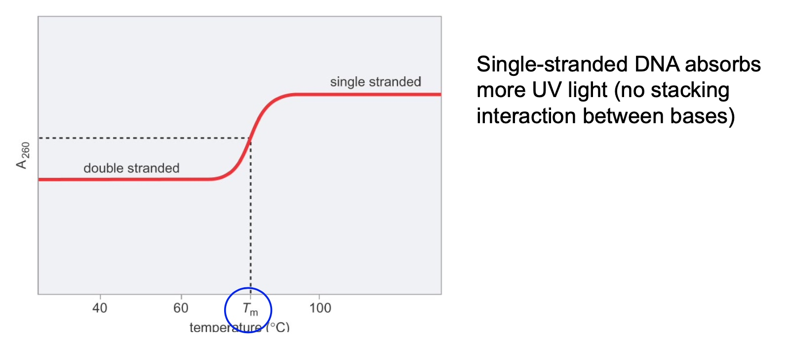

Forms of DNA
A-form and B-form: right-hand helix
Dehydration of DNA drives it into the A form
Z-form DNA is Purine and Pyrimidine repeat. Normally, it takes 10 repeats to form z-form.
Poll Challeng Question
Is more likely to form Cruciform.
The yellow highlighted part is the evidence.
DNA Secondary Structure
Triplex DNA
Hairpin and Cruciform Structures
G-quadruplex DNA
Seperating and Probing Nucleic Acids
Methods
- Ultracentrifugation (by density)
- Non-denaturing gel electrophoresis (by size and shape)
- Denaturing gel electrophoresis (by size)
- 2-D gel electrophoresis (by size, shape, and supercoiling)
Ultracentrifugation
Based on density.
Advantage
Get very pure samples
Disadvantage
Takes a long time
DNA can be seperated by different G-C percent.
G 151.13 g/mol
C 111.1 g/mol
A 135.13 g/mol
T 126.1133 g/mol
A little density difference
Example with yeast DNA:
3 distinct bands can be observed:
- Mitochondrial DNA (20% G-C)
- Chromosomal DNA (50% G-C)
- Ribosomal DNA (60% G-C)
Non-denaturing gel electrophoresis seperates nucleic acids
Based on shapes and size.
The Shape of DNA
The DNA fragments have the same size but different shape, the migrate in different speed.
Visualization
-
Using EtBr(Ethidium bromide ) to intercalating dyes to visualize nucleic acids under UV light.
-
Using radioactive labels and autoradiography.
32P is fre
Denaturing gel electrophoresis
By size.
DNA Strands Must be Seperated to Identify Specific DNA Sequences.
- Denaturation can be spontaneous or catalyzed by enzymes
- AT-rich regions (arrows) spontaneously denature first
- Because there areonly two hydrogen bonds and C-G has 3.
DNA Denaturation can be measured using a Spectrophotometer

G-C Content and Salt Concentration can Affect DNA Denatuaration
Thesalt neutralizes the negative charges on the DNA backbone.
GC-rich and high salt -> highest Tm
AT-rich and low salt -> lowest Tm
Poll Question
Answer: Sample 2
Just look at that figure
Methods for Seperation/Identification of Nucleic Acids
Labeled probes to single-stranded nucleic acids
- Southern blot
- Northen blot
- In situ hybridization
Visualizing Specific Nucleic Acid Sequences: Southern and Northern Blotting
Used to determine
- Presence or absence
- Relative levels
- Orientation(DNA)
We just transfer gel to nitrocellulose because nitrocellulose is more stable than gel.
There is an assumption that these organs is producing approximately the same amount of GAPDH messenger RNA. That is why we can use it as a loading control.
So now we could say, there is more PECAM-1 RBA in the kidney, the lung and the trachea
Microarray: Quanitfy Multiple DNA and RNA Molecules
Can quantify multiple DNA and RNA molecules.
Why go back from RNA to DNA? Because DNAs are more stable than RNA in solutions.
Visualization DNA in cells/tissues: in situ hybridization
Sometimes we want to know where are specific nucleic acid sequences in a chromosome or in a cell.
Steps
- Fix the cells/tissue in denaturing conditions
- Incubate with a probe complementary to the sequence that you want to visualize
- The probes can be radioactive or fluorescently labeled
Why this picture has four dots?
- We are in metaphase spreads. We are in mitosis.
Poll Question
If we only want to analysis the amount only one gene, we can juse use northern blot